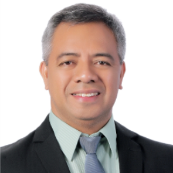

Director's Message

ENGR. RAMIL A. SANCHEZ
Director III
Welcome to Philippine Science High School – Caraga Region Campus!
We are very glad of the significant funding from the national government that has made the 13th campus of the PSHS System a lucky one. The Pisay Caraga family is thankful to Dr. Ruwina D. Gonzaga, the former Campus Director, for leading all the efforts in initially building the campus. We also thank former DOST Secretary Engr. Mario G. Montejo for the huge funding to initially build the campus and the current DOST Secretary Fortunato T. de la Peña for the continued support. We thank the Members of the Board of Trustees, Executive Director Lilia T. Habacon and the members of the Executive Committee for all the support.
Caraga Region is very rich in natural resources and needs to develop the needed human resource to drive the regional economy. We need science and technology to improve productivity and build the new industries of the Region. The role of science and technology in national and regional development becomes critically important in this era known as the Fourth Industrial Revolution. As our country aims to become more competitive globally, the government invested more in STEM education. Thus the presence of Pisay Caraga in Butuan City, the regional center, is strategic. We envision Pisay Caraga as an exponent of regional development.
We commit to work together with our partners in implementing quality STEM education that will benefit the Filipinos, especially the Caraganons. We shall scour the entire Caraga Region for talented students in order to spread the impact of science and technology. What Caraga Region needs is greater value of its rich natural resources. The creation of new industries and the making of a competitive and sustainable Region requires a great human capital, and this is where Philippine Science High School can effectively contribute.
Progressive regions and countries are those which have high number of talents in the STEM discipline. The entire Pisay Caraga community aspires to contribute towards the attainment of our goal of Becoming the FAME (Fishery, AgroForestry, Mineral Processing, Ecotourism) Center of the Philippines and our collective vision “Ambisyon Natin 2040.” Pisay Caraga commit to work hard together in pursuit of the following goals for the next six years:
1. Contribute to regional development
2. Enhance capacities of the faculty and staff
3. Improve student learning and experience
4. Provide adequate, safe and eco-friendly learning environment
To realize this, I call upon all members of the family to contribute in making Pisay Caraga Inclusive, Adaptable, Making a Difference, Passionate, Innovative, Service-Oriented, Accountable and Youthful (“I AM PISAY”) . We are using #IAMPISAYCaraga in social media.
May this website maximize sharing of information to empower the youth of Caraga, the parents and partners of Pisay. This website of Pisay Caraga aims to provide the right information to the students, parents, staff, partners and the general audience, here and abroad. Pisay Caraga will utilize this website to promote its programs, help increase meaningful engagements with other interested parties, improve quality of service, and provide needed information in accordance with statutory and regulatory requirements.
Thank you and GodSpeed!
Back